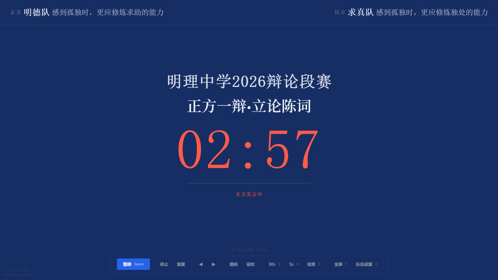
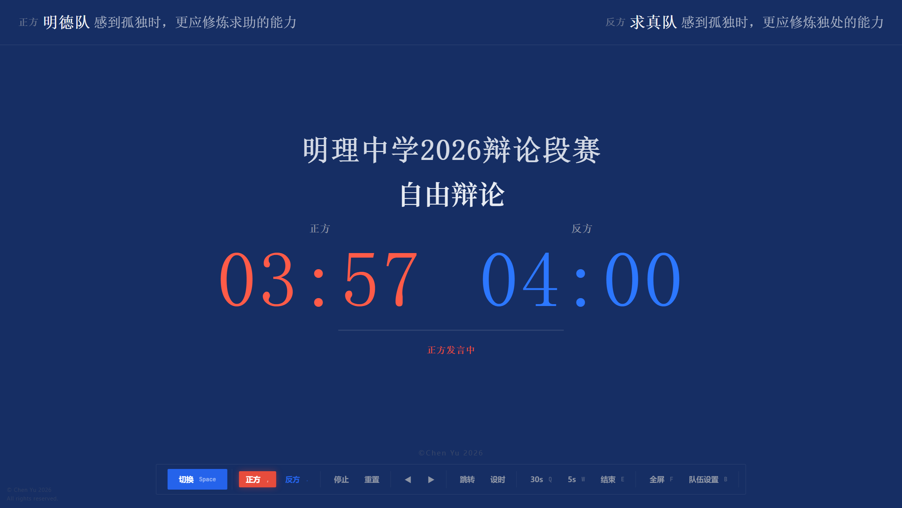

五种环节类型
无计时、单边计时、单边发问、中立计时、双边对辩。自由辩论双表独立读秒，按空格即可切换持方。
DEBATE TIMER · V3.5.0 · 完全离线
一款为辩论赛现场而生的桌面计时器。五种环节类型、双边对辩、广播级大字显示、快捷键盲操，以及一键打包的赛场安装包——断网也能准时开场。
这是真实运行的计时引擎 · 点击开始，或直接按 Space
从赛前编排到现场读秒，每一处交互都按“一个人、一台电脑、一间教室”的真实场景打磨。
无计时、单边计时、单边发问、中立计时、双边对辩。自由辩论双表独立读秒，按空格即可切换持方。
空格启停、Q/W/E 试音、F 全屏、B 返回、方向键换环节。灯光暗、观众多，也不必低头找按钮。
直接在计时器预览里点选文本：改内容、字体、字号、颜色，拖动位置，正反方对称元素自动同步。
经典、广播竞技、专业克制、活力校园。颜色、渐变、图片背景、自定义 TTF 字体，全部收进配置。
一键导出 Inno Setup 安装程序，双击安装、自动建快捷方式。目标电脑无需 Node.js，也无需联网。
预设多场次赛程，一键带入队伍、辩题、评委与队徽；现场只允许改队伍与辩题，避免误触。
以下画面由程序实际渲染截取：单边计时与双边对辩两种现场形态。


点击左侧预览，实时切换主题令牌——圆角、进度条、字重、阴影与动效都会随之改变。
所有令牌都能在编辑器内逐项修改，并随配置文件一起导出、分享。
适合彩排、临时场地与投屏演示。打开即可设置队伍与辩题。
桌面版 · Windows / macOS / Linux 下载安装包完整编辑器、自动更新与独立计时器导出，适合正式赛事部署。
需要源码与文档？前往 GitHub 仓库。首次部署请阅读 README 中的导出与发布流程。